Most Viewed
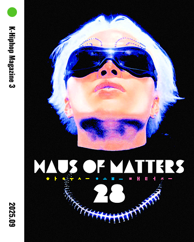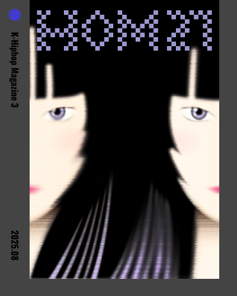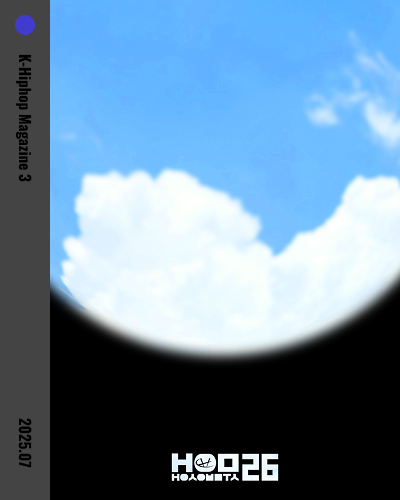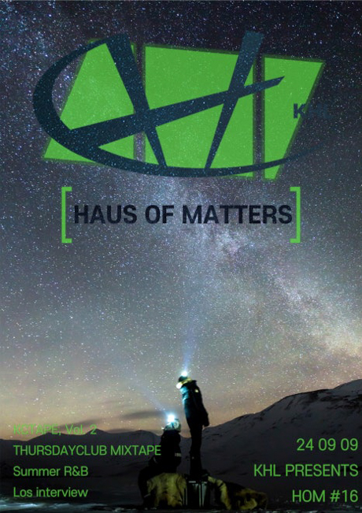
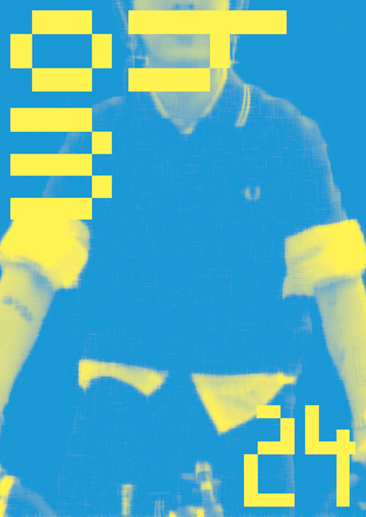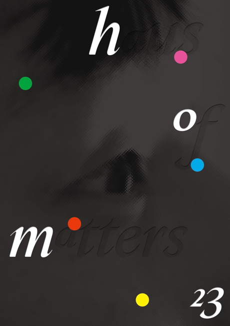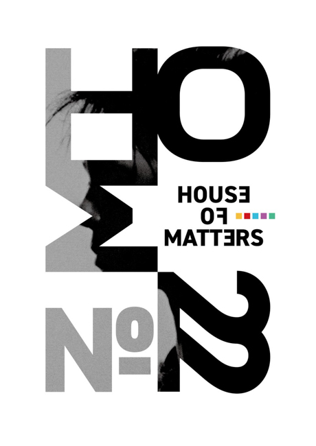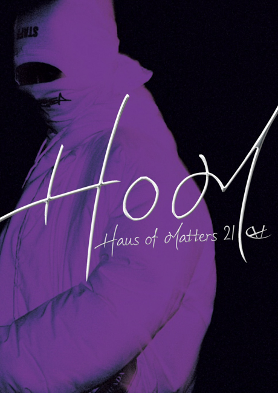
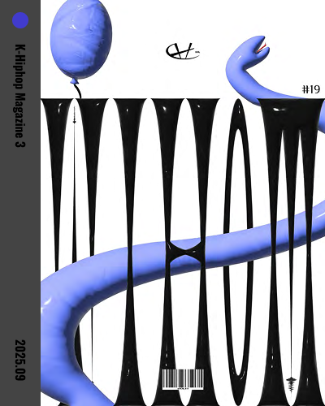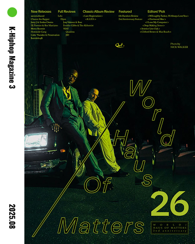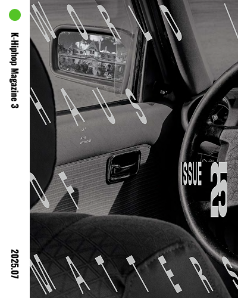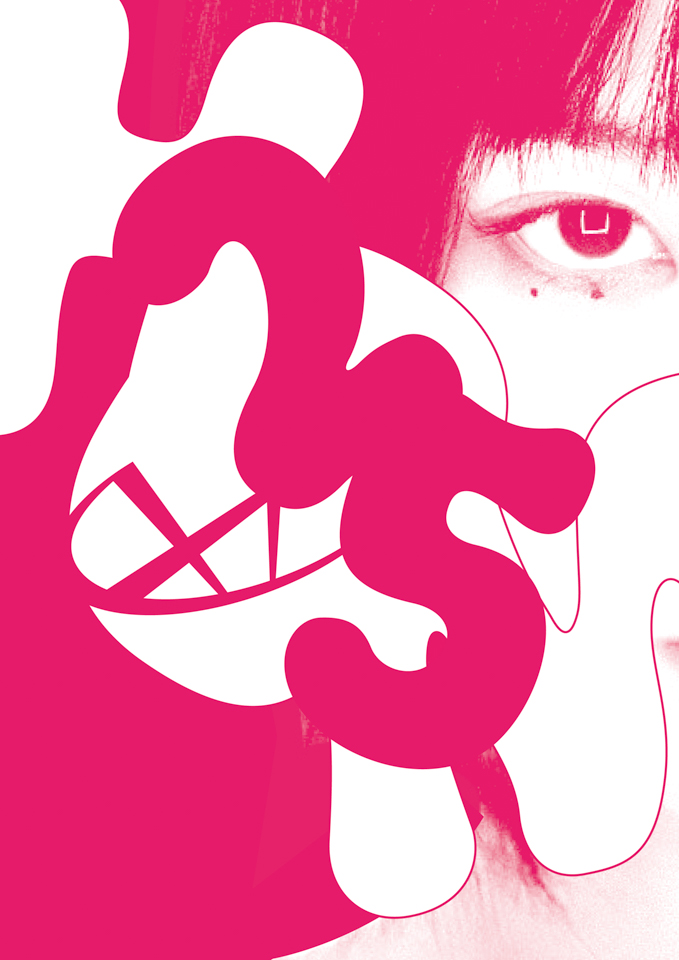
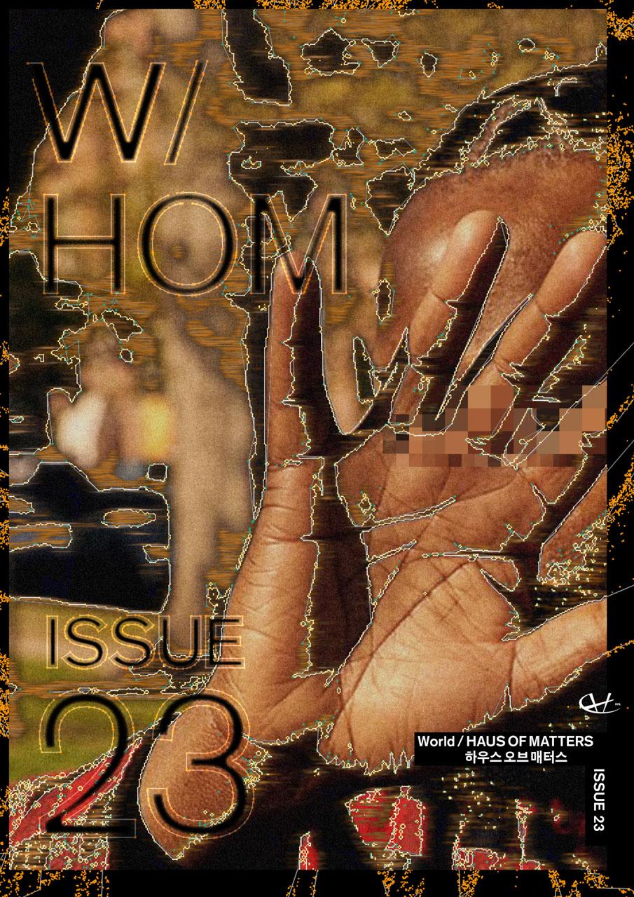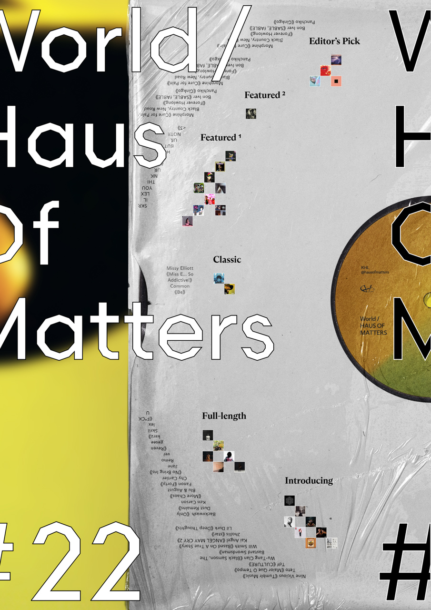 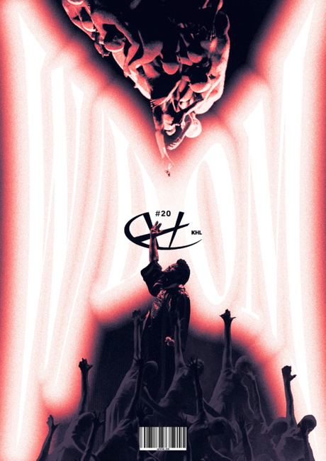
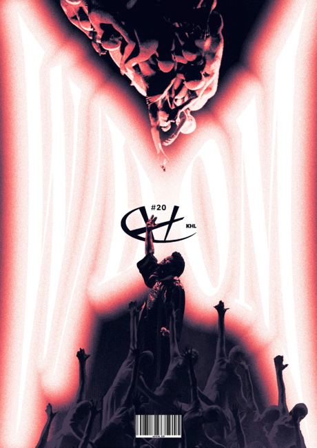
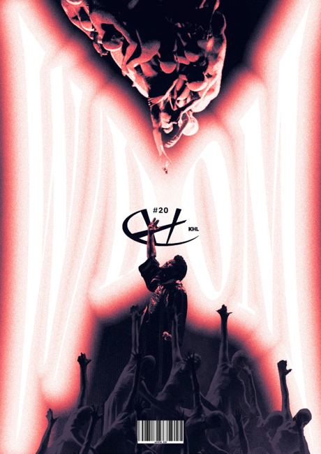
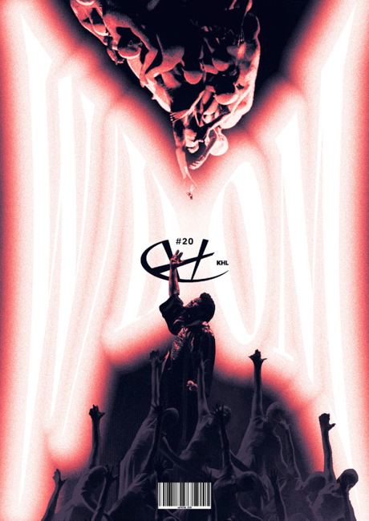
About 808은 힙합문화와 음악을 전문적으로 다루는 매거진입니다.
이 문화를 보다 더 깊게 알아가고 싶은 이들을 위해
다양한 형식의 글을 통해 블랙뮤직의 매력이 뭔지,
그 음악이 담고 있는 의미와 가치는 무엇인지 기록해나가고 있습니다.
단순한 정보 전달을 넘어, 저희만의 개성을 담아
블랙뮤직을 둘러싼 다채로운 풍경을 함께 나누어보려 합니다.
k&world hip hop magazine
Most Viewed
Latest Issues
 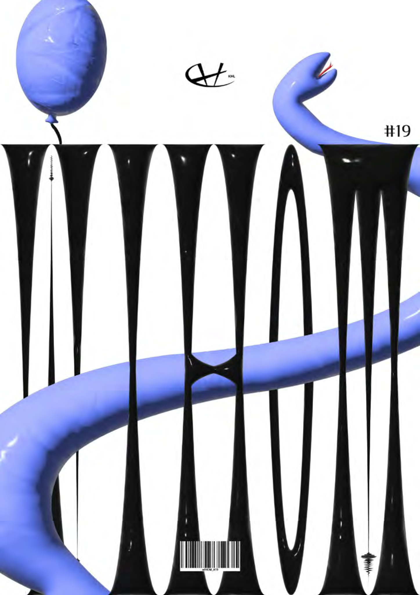
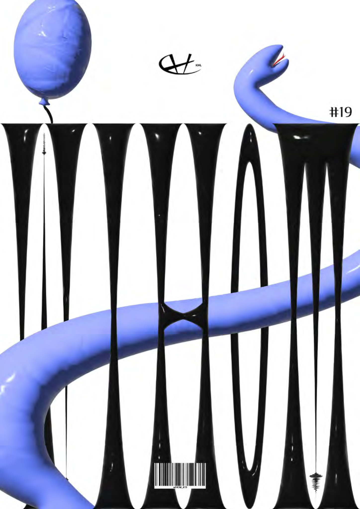
XXK - 초월 | 퓨처리스틱 스웨버 - B4 Swag Society+ | 더한글 - 말 보다 행동 | 매드클라운 - ANYTHING GOES II | JJK - MEMBERS ONLY -2025 S/S- | 제이비토 - PADO
머쉬베놈-얼
페스티벌 싸대기 때리는 콘서트가 있다?:
추다혜차지스 - 소수민족 | 제이민 - YIN & YANG | 오얏 정 - ovocodo | 영잔디스 - 21 grams | 지푸 - CHRISTIAN | 비앙, 헤세 - GL1TCHPORTABLE | 재달 - Time Attack | 정욱 - Giant
EK-YAHO
플랫샵과의 프랜드쉽
리치 이기, 구피 키드, 떨스티헤다고트 - NO FEAR LIFE | 지투, UGP - Human Tree | 몰리 얌 - TIKTOKSTA | 한, 찬 - 한찬가게 | 홍다빈 - senseS | 던말릭 & 드비타 - 사랑은 노래와도 같이 : Love is a Song
오왼-POEMV
힙합이 정신건강에 미치는 영향들
Wolfacejoeyy - Cupid | Turnabout - GORGEOUS | Logic - Aquarius III | E L U C I D - INTERFERENCE PATTERN | Lil Baby - WHAM
SZA - LANA
Joey Bada$$ - B4.DA.$$
xaviersobased - once more | Metro Boomin - Metro Boomin Presents: A Futuristic Summa (Hosted by DJ Spinz) | Gabe 'Nandez & Preservation - Sortilège
LELO - New Detroit
Kanye west - Late Registration
EsDeeKid - Rebel | Loyle Carner - hopefully ! | Yaya Bey - do it afraid | LAZER DIM 700 - Sins Aloud | JID - GDLU (Preluxe)
Kevin Abstract - Blush
Reakwon - Only Built 4 Cuban Linx
"내가 어떻게 하면 더 행복하게 살 수 있는가" / 입대 이후 2년 간의 모든 이야기
예전에도, 그리고 지금도 제가 관심 있는 건 그거예요 "내가 어떻게 하면 더 행복하게 살 수 있는가"
보러가기
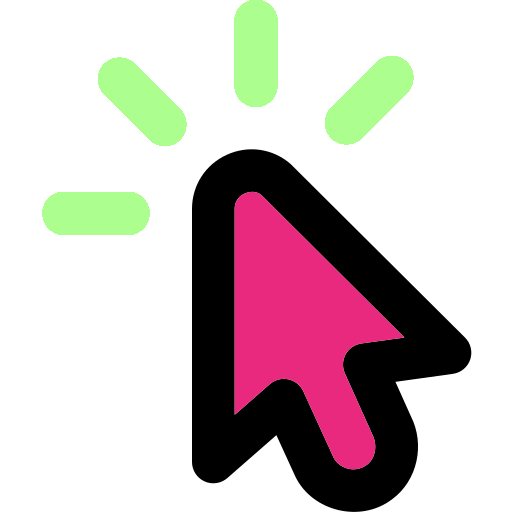혁명가이자 프로메테우스. 버벌진트의 최고작이자, 한국힙합 역사상 최고의 앨범
시장을 발전시키겠다는 순수한 열정에 돌아온 비난과 누명에 대한 그의 환멸과 분노, 그리고 조롱. 이 서사를 뒷받침하는 치밀한 프로덕션의 향연
보러가기
3/4분기의 마지막에 정리하는 다사다난 했던 2025년도 힙합씬
카피캣에서 올해의 아티스트에 가장 가까워진 SIK-K / 수많은 개성있는 신인들의 등장/ 그 외에도 다양한 비프와 시작예정인 쇼미12
보러가기
최엘비 단독콘서트 〈The Shelter: 살아있다〉
독립음악의 호평이후 발매된 최엘비의 her. 문장력과 서사를 이끌어가는 능력으론 둘째가라면 서러운 그의 새 이야기를 현장에서 들어보자
보러가기
2025/9
Playlist of Month